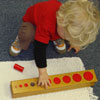
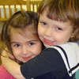
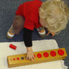
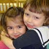
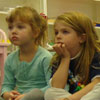
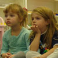

|
        
The Montessori School of Washington is a small, nurturing environment for children aged two to six, where the curriculum is based on the philosophy of Dr. Maria Montessori. The goals of our programs are:
- Provide opportunities for each child to be successful, creating a positive self-image.
- Help each child become competent, independent and self-confident and to learn to respect freedom with responsibility.
- Encourage each child's natural curiosity and love of learning within a structure but with flexibility.
- Provide natural, ungraded, vertical grouping of children so that they may learn from each other.
- Encourage independent study as well as group cooperation to foster self-discipline.
The Montessori School of Washington aims to introduce children to the joy of learning at an early age and assists the child in creating an inner order. This self-discipline becomes the basis of freedom, within a framework, for children to learn through their senses according to their own timetable of growth and level of interest.
By achieving continuous success in learning experiences, the child will develop self-confidence and competence, attributes which are carried into maturity. When children acquire self-mastery and self-respect, they then respect others.
     

|